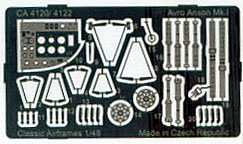
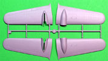
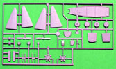
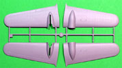
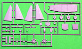
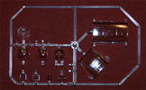
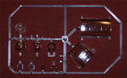
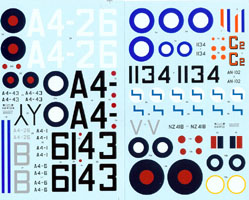
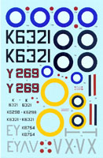

Kit #4120 and 4122 MSRP $54.95
Images and text Copyright © 2006 by Matt Swan
Classic Airframes Avro Anson Mk 1 (Early)
Kit #4120 and 4122
MSRP $54.95
Images and text Copyright © 2006 by Matt Swan
Developmental Background
The Avro Anson was a dismal failure as a weapon of war but even so managed to contribute greatly to the war effort as a training aircraft. The Anson first flew in 1935 for Imperial Airways as a small passenger aircraft and mail carrier but the British Aircraft Ministry saw potential within this aircraft as a coastal patrol craft and submarine interdiction unit. By 1936 it had been militarized with a single .303 machine gun and a bomb load capability of 2 100 pounders internally and eight 20 pounders externally. Sounds good but when an Anson mistakenly attacked a Royal Navy sub with its 100 pound bombs all it was able to do was break a few light bulbs.
Newer aircraft were already coming into service that could perform the coastal patrol functions much more capably so the Anson, "Faithful Annie" as her crews called her, was regulated to training duty. Here she performed very well for the RAF and the Canadians. Several aircraft were sold as export units to Australia, Afghanistan, Rhodesia, India and Finland. This was the first low-wing monoplane used by the RAF, and the first operational aircraft with retractable (manually) landing gear. Canadian built Mk 2s were even used by the U.S. Army as AT-20 crew trainers. Pitifully slow and weakly armed even with two engines should one of the Armstrong Siddeley Cheetah IX radials fail she had little chance of staying in the air on the remaining engine. Even with these faults her crews loved flying her claiming that she was not only sturdy but reliable and pleasant to fly.
Overall nine different marks of the Avro Anson were manufactured ranging from civilian transports to navigational trainers, gunnery trainers, aerial ambulances, magnetic surveying and radio trainers. More than 11,000 units were produced and the type saw an active service life of seventeen years. In 1968 there was still one Avro Anson flying in service for the RAF. Today approximately five Avro Ansons are still airworthy.
The Kit
Classic Airframes has released the Mk. 1 Anson under two kit numbers, the first being that used by the RAF and the second being the export version. Both these kits are identical other than the decal sheets and the related decal placement instructions. The kit arrives in a light duty cardboard box that will not provide good protection in a stash environment. Even as a newly arrived kit the box was showing signs of collapsing under the weight of other kits being stacked on top of it. Inside we have three small bags of resin detail pieces that include the complex cabin framing, engines, cockpit details and landing gear pieces. The resin parts all look to be well done with no mis-casting or air bubbles. They do all have a heavy degree of flash that fortunately cleans up relatively easy. Within these three bags there are sixty eight resin detail pieces.

In a small plastic sleeve is a fret of photo etched pieces. Here we have seatbelts, instrument bezels, flight control hinges and other various internal detail components for a total of thirty seven photo etched pieces. Injection molded clear parts are packaged separately on a single medium sized sprue. The main canopy comes as two primary sections that fit well together and to the aircraft fuselage. Other piece here include the two piece ball turret, option clean nose sections, side windows, landing light lens and astrodome. All the clear pieces display excellent clarity and well defined raised frame lines. There are ten clear parts on this sprue.
And finally we have a single large poly bag containing three full sized sprues of medium gray low pressure injection molded plastic parts. While this is a limited run kit the parts are very close in quality to conventional high pressure injection pieces. There are no locator pins which could be good or bad depending on your point of view, for myself I would rather not have to deal with locator pins. There is almost no flash on the parts but a fairly consistent mold separation seam which is typical of limited run kits. The sprue gates are all small, panel lines are engraved, of consistent depth and seem crisp. No parts display any sink marks and all injector pin markings are on internal surfaces where they will not cause any clean-up issues. Engines are provided in both resin and plastic. Surface detail on the wings and flight controls are raised and do a nice job of showing the internal rib structure. All primary parts seem to fit together well and only minimal amounts of putty will be needed for assembly. Both kits include a second set of ‘long’ ailerons that could be fitted with some surgery for a very early version of the Anson. There are fifty one gray injection molded pieces giving us a total parts count of one hundred sixty six pieces in the box with only about five of those being optional.
 



 

You may click on the small images above to view larger pictures.
Decals and Instructions
Kit instructions come in the standard Classic Airframes format of the half sized pamphlet of eight pages. It begins with a good historical background of the type with a profile drawing of the aircraft. This is followed with a complete parts map and paint chart. Next we have seventeen exploded view construction steps with plenty of construction tips and color call-outs. Decal placement instructions and exterior painting guides are provided on a separate set of pages which allows Classic Airframes to box this as two different kits based on the marking sheets. You can see the complete instructions for both both kits here.


You can click on either of the small images to the right to view full sized scans of both kit decals. Markings for both kits look very nice with excellent print registry and color density. We get lots of basic national markings for three RAF aircraft in kit #4120 and seven aircraft in kit #4122. Unfortunately we do not get any service stencils or warning markings on any of the kit sheets. The decals we do get look to be nicely thin and should behave well with all standard decal setting agents.
Conclusions
If you have played with any of the old Classic Airframes kits and have been turned off this manufacture due to problematic fitting resin interiors or poorly fitting parts you need to come back and take another look. Classic Airframes has been consistently improving their kits and even retooling some of the old kits to rectify issues. These two Anson kits demonstrate just how far this small company has come. Not only are they producing kits that the main stream guys are reluctant or even afraid of doing, they are producing them with style and quality. This is a well engineered kit of an important aircraft, the parts fit together well, the instructions are clean and concise and the decals while not as comprehensive as I would like to see definitely will take care of the job. The resin details take this kit to a level nearly impossible to match with plastic only and the quality of the resin is as good as you could hope to see. The one issue I would like to see dealt with here is not even kit related but purely packaging, I would like to see a stronger box that will give a better shelf life in the stash. While not a kit for rank beginners I still give it a very good recommendation and suggest you get at least one for your collection before the molds wear out.


{kind=link}
{kind=link}
{kind=link}
{kind=link}
{kind=link}